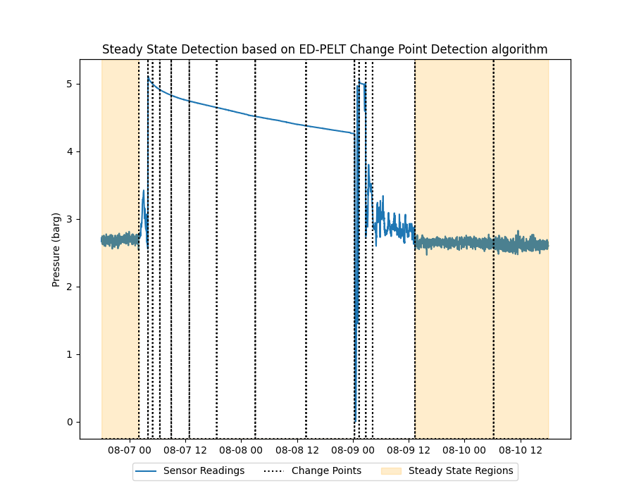

Note
Click here to download the full example code
Steady State Detection: Change Point
Example of steady state detection (SSD) based on the ED-PELT change point detection (CPD) algorithm. We use data from a compressor suction pressure sensor (in barg). The dataset contains 4 days of process of process data (sampled using 1m granularity).
In the figure below it can be observed how the CPD algorithm identifies change point segments in which steady state conditions are evaluated. The input parameters used by the algorithms in this example are:

min_distance = 60 → specifies the minimum size of segments to be detected (CPD and SSD algorithms)
var_threshold = 5.0 → specify the maximum variance allowed for each region (SSD algorithm)
slope_threshold = -8.8 → specify the maximum slope (10^-8.8) allowed for each region (SSD algorithm)
import os
import matplotlib.pyplot as plt
import pandas as pd
from indsl.detect import cpd_ed_pelt, ssd_cpd
base_path = "" if __name__ == "__main__" else os.path.dirname(__file__)
data = pd.read_csv(os.path.join(base_path, "../../datasets/data/suct_pressure_barg.csv"), index_col=0)
data = data.squeeze()
data.index = pd.to_datetime(data.index)
# TODO: Create load_pressure_data method from above
# Plot the process data
fig, ax1 = plt.subplots(figsize=(9, 7))
ax1.margins(x=0)
ax2 = ax1.twinx()
ax1.plot(data.index, data.values)
ax1.set_ylabel("Pressure (barg)")
# Change point and steady state detection parameters
min_distance = 60
var_threshold = 5.0
slope_threshold = -8.8
# Detect the Change Points
cp_ts = cpd_ed_pelt(data, min_distance)
# Evalute the Steady State Conditions
ss_map = ssd_cpd(data, min_distance, var_threshold, slope_threshold)
# Plot the Steady State regions
ln2 = ax2.fill_between(ss_map.index, ss_map.values, color="orange", alpha=0.2)
# Plot the Change Points
ax2.plot(cp_ts.index, cp_ts.values, color="k", linestyle=":")
ax2.set_ylim([0, 1])
ax2.set_yticks([])
# create legend below the plot
plt.legend(
(plt.Line2D(data.index, data.values), plt.Line2D(cp_ts.index, cp_ts.values, color="k", linestyle=":"), ln2),
("Sensor Readings", "Change Points", "Steady State Regions"),
loc="upper center",
bbox_to_anchor=(0.5, -0.05),
fancybox=True,
ncol=3,
)
plt.title("Steady State Detection based on ED-PELT Change Point Detection algorithm")
plt.show()
Total running time of the script: ( 0 minutes 6.295 seconds)